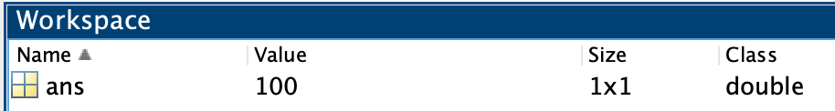
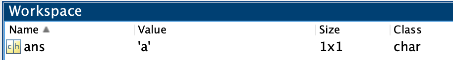
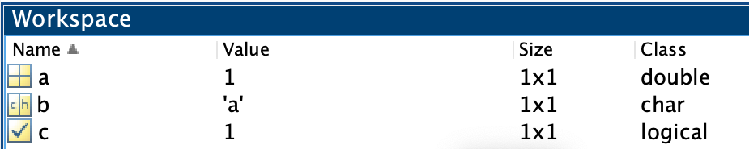

Array Assignment
Adding basic data to variables.
Overview
In this module, we cover the basics of assigning fundamental data types to variables.
Special Characters Used
=- Equal Sign. A.k.a, the Assignment operator. Used to assign data to a variable.[ ]- Square Brackets. Used to concatenate (or group) numbers or logical values into one variable' '- Single Quotes. Used to indicate Characters or concatenate multiple characters together.
Functions discussed in this Module
Basic Data types
Remember, for our intents and purposes, there are only three types of data:
- Numbers
- Characters
- Booleans
To indicate what data you want, you use the following syntax:
- For Numbers, you simply enter a number, like
12 - For Characters, you surround the characters that you want with single-quotes, like
'a' - For Booleans, you use the function
trueorfalse
Assigning Data to MATLAB
The easiest way to assign data to a variable in MATLAB is to simply type the data you want in the command window.
Type 100 in the command window and hit return, as follows:
When you do this, you get the following result:
Notice what MATLAB did here. Since you just entered some data, MATLAB created a variable, ans and assigned the data to that variable. Inspect the workspace. There is now a row that contains information on the variable ans

Notice that the class of the variable is listed as double, which is the default numeric class. We'll get into why "double" in a later module, but, just so you know, there are like ten different numeric classes. Don't worry, it will make sense later.
Great, easy enough, but what happens when we enter a new piece of data? Type the character array 'a' in the command window and hit return. Remember to use the single quotes to indicate that you want a character array.
ans. We didn't get a new variable, we just overwrote the previous contents of ans. If you review the Workspace, you will see that the 100 is nowhere to be found.

Assigning Data to Variables
To do anything serious in MATLAB, you are going to need more than one variable. Luckily, MATLAB provides the ability for you to name your own variables.
To do so, you use the following syntax
name_of_variable = value_of_variable
Assignment Conventions: - the variable receiving the data is always on the left side of the equal sign. - The data to be assigned is always on the right side of the equation. - If the variable doesn't exist, MATLAB creates one (of the appropriate class)
Type the following in the Command Window:
…These three lines of code create the three different variables with three different data types. Notice that the character array is colored pink.
Review the properties of these variables in the workspace:
Review the Workspace

- Each variable is listed in a different row.
- Each row shows the name of the variable and its contents and gives you some information about the variable, such as the array size and class (data type).
- There are different yellow icons for the different variable classes.
- The variable classes are listed as "double", "char", and "logical".
- The variable sizes are all listed as
1x1. This means that each variable has only one element of data.
Concatenation
Concatenation means to package multiple elements into one variable. Often, we want to add more than one value to a variable, packaged in separate elements. To concatenate numbers or logical values, we use the special character Square Brackets ([ ]), as follows:
Example: Concatenating Numbers or Logicals
Here, the variable d has two elements with the values 1 and 2, while the variable e has three elements with the logical values 1, 0, and 1.
To concatenate characters, we use the single quotes, as follows
Example: Concatenating Characters with Single Quotes
Here, the variablef has two elements with the values z and x, while the variable g has four elements with the values $,?, _, and %
Challenge: Concatenation
Concatenate the values 11,12,and 15 and assign to the variable d2
Copying data
You can copy the value from one variable to another by using the following convention:
Notice that we have two different variable names on either side of the assignment operator (=). The variable name to the left of the equal sign receives the data that is extracted from the variable name on the right side of the equal sign. Data always moves from right to left.
Example: Copying Data from a variable
Type the following in the command window:
The variable h is created and receives the data extracted from the variable g (which was created in the previous example).
Recursive Assignment
Sometimes we want to add new elements to a variable that already exists. To do this, we use Recursive assignment, which simply means that we include the same variable name on both sides of the assignment operator.
Tip
Remember the convention: Data is always extracted from the variable name to the right of the equal sign and added to the variable name that is to the left of the equal sign.
For example, the variable h currently contains the following characters: $?_% — a well known expletive in the comic book world. But, we forgot to include the most important part: the exclamation point at the end. No worries, we can add a character to h as follows:
| Add exclamation point to end | |
|---|---|
Notice we include the variable name h on the right side of the equal sign. With the square brackets, we indicate to concatenate the contents of h with the character !. And we get…
…the full expletive. The ! character was added after data extracted from h and then all of the data was added back to h. Now, h has five elements, with ! as the final element.
If we want to expand on our expletive by adding a character to the first position of h, we would use the following syntax:
…Here, the @ character is added before all of the data extracted from h. Now h is a 1x6 character array and you can really let them have it.
Challenge: Copying and Recursive assignment
Determining the number of elements in a variable
So, how do we keep track of the size of our variables. One way is to check the workspace (or use the function whos):
Name Size Bytes Class Attributes
a 1x1 8 double
b 1x1 2 char
c 1x1 1 logical
d 1x2 16 double
e 1x3 3 logical
f 1x2 4 char
g 1x4 8 char
h 1x6 12 char
As you can see, we generated a lot of data in a very little amount of time. The column "Size" indicates the dimensions of each variable.
Why are the variables with just one element, like a,b, and c, listed as having a size 1x1? Why not list the size as 1?
Remember, all MATLAB numeric variables are matrices by default. While vectors and matrices technically have different definitions, MATLAB treats them all as if they are matrices. Importantly, MATLAB cannot differentiate between a vector (1 row or 1 column) and a matrix (at least one row and one column). You need to use a function, like [size][mlb-ref-size], to differentiate the two.
Function: size
The function size returns the array dimension size of a variable (so you can get the values programmatically instead of having to refer to the workspace)
This result indicates that b is a matrix with the dimensions of 1 row and 1 column. Notice that the output is assigned to the variable ans.
The function ismatrix reports whether a variable is a 2D matrix. A variable with more than 2 dimensions returns a zero. This will be important when we deal with image stacks and RGB images that have three or more dimensions.
Challenge: Size
Variable Names Rules
Capitalization matters
MATLAB is case-sensitive, which means a capital letter creates a different variable name than a lowercase letter. Consider the following:
Example: Assigning A and a
…In this syntax, the equal sign = means 'assign', as in 'assign the value 10 to the variable a.'
Notice that the workspace has been populated with two new variables, A and a. This is because MATLAB is case-sensitive and those two letters are treated as completely different names.
Here, I use the function whos to display the contents of the workspace in text form:
Valid Array Names
You can't just willy-nilly name your variable whatever you want. MATLAB has rules that you must follow.
Valid MATLAB variable names must start with a letter, followed by letters, digits, or underscores. They can have NO SPACES or weird characters like exclamation or hashtag. Also, MATLAB is case-sensitive; recall that A and a were treated as different variable names.
Using Complex Variable Names
Let's create a new, more complex name for a variable. Type the following in the command window:
In the workspace, there is now a variable called monkey_brains_2 with an assigned value of 45. By using a combination of letters, numbers, and underscores, it is fairly easy to come up with a diverse range of variable names.
How long can your variable name be?
The function namelengthmax returns the maximum length a variable name can be:
Avoiding Naming Conflicts
When coming up with variable names, you should try to avoid names that are already reserved by MATLAB.
Function: exist
The MATLAB function exist tells you if a variable name is already being used. The basic syntax is to type exist followed by a space and then the name in which you are interested in testing
function is a reserved name used by MATLAB. In contrast, when you type:
exist here is 0 (or false) means that the name monkey_brains_4 is not currently being used by MATLAB and is free for the taking.
Challenge: Function exist
What will be the result if you type exist monkey_brain_2 in the command window?
The result 1 indicates that the variable 'monkey_brain_2' already exists (we created it in a previous step).